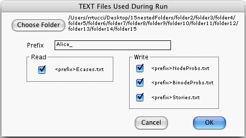

This command opens the following window:

Pressing the Choose Folder button opens a Mac "folder-chooser" window—a
window that allows you to choose an already existing folder. Let's call
the folder that you choose the designated folder. Your designated
folder will store TEXT files used by Quantum Fog. Once the folder-chooser
window is dismissed with an OK, the path to the designated folder will appear
to the right of the Choose Folder button.
To the right of the word Prefix, is a text box. You should enter into it a string. This string will be used as a prefix to the name of all TEXT files requested in the bottom part of the Text Files Used During Run window.
The bottom part of the Text Files Used During Run window allows you request files you want Quantum Fog to read or write. You request a file by putting a check mark (by clicking the box) in front of the file's name.
If you press the OK button of the Text Files Used During Run window, then, when you press Go Forward, the computer will
<prefix>Ecases.txt, if that file
was requested, and if Quantum Fog finds a file with that name in the designated
folder,
<prefix>NodeProbs.txt (ditto,
<prefix>BinodeProbs.txt,
<prefix>Stories.txt) located in the designated folder,
and then WRITE information in the file, if that file was requested.
Pressing Go Forward, with the
<prefix>NodeProbs.txt option on, will OVERWRITE
any files named <prefix>NodeProbs.txt that are stored
in the designated folder. If you do not wish this to happen, before you press
Go Forward, move such a file to another folder. The same warning about
over-writing applies for the
<prefix>BinodeProbs.txt and
<prefix>Stories.txt options.
As its name implies, the <prefix>Ecases.txt file should
contain a list of e-cases. See the section entitled "How To Write An E-Cases
File".
The computer will write into the
<prefix>NodeProbs.txt file the probability distribution
for every node of the graph. (Actually, if no nodes are selected, it will
write the probability distribution for every node of the graph. However,
if some nodes are selected, then it will write the probability distribution
only for those nodes that are selected. This feature is convenient when you
want the file to show information for just a few, not all, of the nodes.)
The computer will write into the <prefix>BinodeProb.txt file
the probability distribution of those bi-nodes which you specified earlier
in the Bi-nodes Of Interest window.
The computer will write into the <prefix>Stories.txt file
a list of all the possible stories. The stories are listed in groups such
that all members of a group have that same ending. The file gives for each
story: